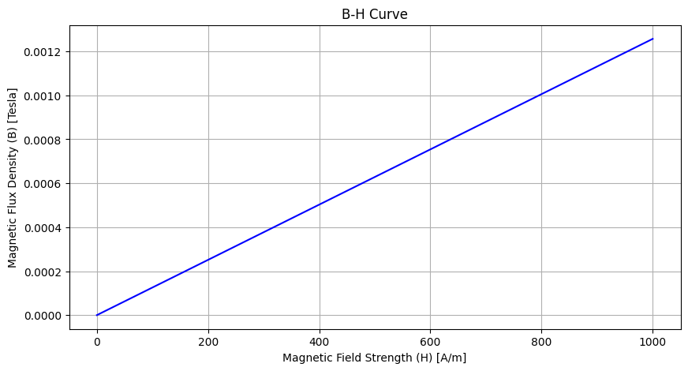
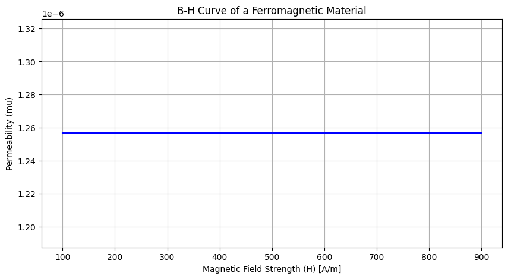
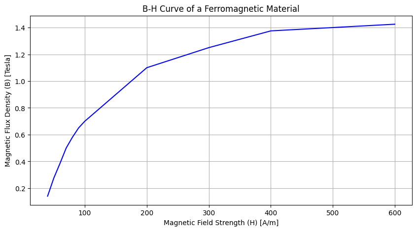
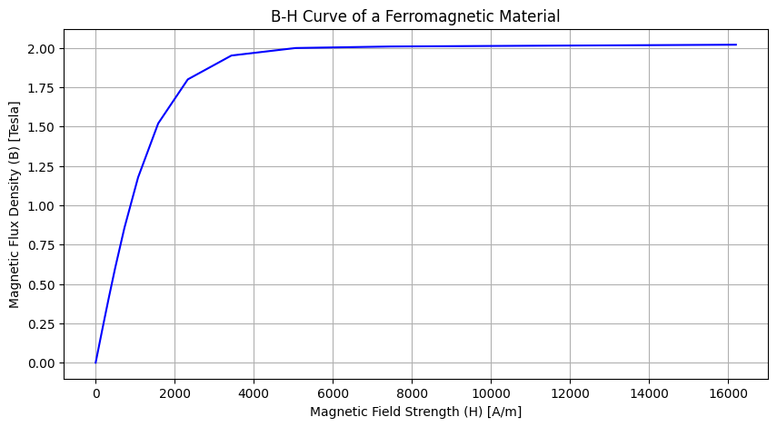
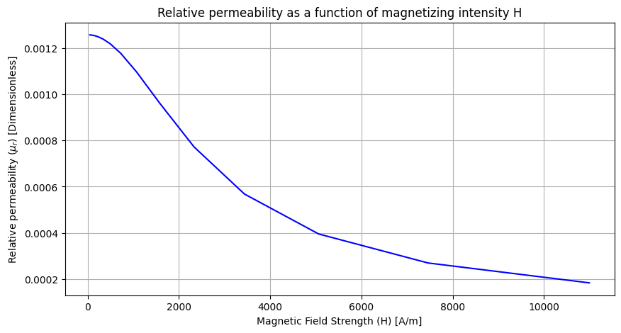
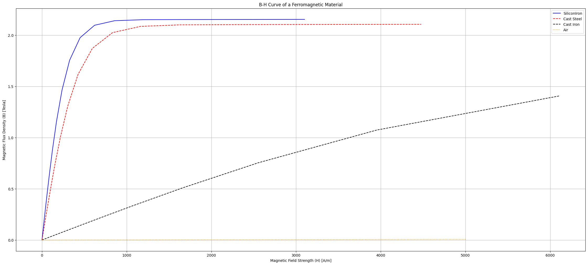

Magnetic fundamentals#
How a magnetic flux exists in a body or component, it is due to the presence of a magnetic field intensity H []. This is the fundamentals of electromagnetism.
Electromagnetism#
Electromagnetism
Magnetic field strength H and magnetic flux density B
B-H curve of vacum
B-H curve of magnetic material
Determining the relative permeability
Faraday’s law of electromagnetic induction
Voltage induced in a conductor
Lorentz force on conductor
Direction of the force acting on a straight conductor

https://en.wikipedia.org/wiki/Fleming’s_left-hand_rule_for_motors#/media/File:LeftHandOutline.png
{kind=link}
 Fleming
Fleming1902
IMAGE CREDITS courtesy of Wikimedia Commons.
https://en.wikipedia.org/wiki/Fleming’s_left-hand_rule_for_motors#/media/File:RightHandOutline.png
{kind=link}
Fleming, John Ambrose (1902). Magnets and Electric Currents: An Elementary Treatise for the Use of Electrical Artisans and Science Teachers. E. & F.N. Spon, limited.

https://en.wikipedia.org/wiki/Right-hand_rule#/media/File:Manoderecha.svg
{kind=link}

https://en.wikipedia.org/wiki/Right-hand_rule#/media/File:Coil_right-hand_rule.svg
{kind=link}
The rules#
The largest and highest-powered magnet lab in the world, the National MagLab provides simulations of the magnetic domain and rules concerning theese. Feel fre to try them out in the links.
Links#
MagneticDomains
MagnetidFieldAroundAWire
RightHandAndLeftHandRules
MagneticFieldOfASolenoid
MagneticCoupling
Magnetic field#
The magnetic field are the fundamental mechanism by which energy is converted from one form to another in motors, generators, and transformers.
4 Basic principles where magnetic fields are used in these devices
A current-carrying wire produces a magnetic field in the area around it
A time-changing magnetic field induces a voltage in a coil of wire if it passes through that coil (Transformer action)
A current-carryng wire in the presence of a magnetid field has a force induced on it (Motor action)
A moving wire in the presence of magnetic field has a voltage induced in it (Generator action)
Electromagnetic Induction Lorentz Force Inductive Reactance Alternating Current
Production of a magnetic field#
Principle one is defined by Ampere’s law:
where H is the magnetic field intensity produced by the current \(i_{net}\)

Fig. 1 Magnetic core with coil.#
Ferromagnetic material#
If the core of the component in the image is composed of iron or similar metals essentially all the magnetic field produced by the current will remain inside the core, so the path of integration is the length of the core \(l_c\)
The current passing within the path of integration \(I_{net}\) is \(Ni\)
Since the coil of wire cuts the path of integration N times while carrying the current i:
This
Becomes
OBS: We will deal with losses later.
Magnetic field strength H and magnetic flux density B#
Whenever a magnetic flux \(\phi\) exists in a body or component, it is due to the presence of a magnetic field strength H given by:
where
H = magnetic field strength [A/m]
\(\mathcal{F}\) = U = magnetomotiveforce (mmf) acting on the component [A] (or ampereturn)
l = length of component [m]
The resulting magnetic flux density is given by
where
B = magnetic flux density [T]
\(\phi\) = flux in the component [Wb]
A = cross section of the component [\(m^2\)]
B-H curve#
There is a definitive relationship between the magnetic flux density (B) and the magnetic field strength (H) of any material. This is expressed by the BH-curve.
In vacuum, the magnetic flux density B and the magnetic field strength H is directly proportional and is expressed by:
where
B = magnetic flux density [T]
H = magnetic field strength [A/m]
\(\mu_0\) = magnetic constant [=\(4\pi \cdot 10^{-7}\)]
Hence, permeability is:
And relative permeability:
B-H curve#
The Permeability in vacuum is driven by the magnetic constant \(\mu_0\), which states the relationship between B and H.
H (amp/m) |
B (mT) |
|---|---|
0 |
0 |
100 |
0.125 |
200 |
0.251 |
300 |
0.377 |
400 |
0.5 |
500 |
0.628 |
600 |
0.753 |
700 |
0.879 |
800 |
1 |
900 |
1.13 |
1000 |
1.257 |
# import libraries
import numpy as np
import matplotlib.pyplot as plt
import math
# The permeability constant, in vacuum or free space
mu_0 = 4*np.pi*10**-7
H_mu0 = np.array([0,100,200,300,400,500,600,700,800,900,1000])
B_mu0 = mu_0 * H_mu0
d1 = np.array([H_mu0,B_mu0])
d = d1.T
d
array([[0.00000000e+00, 0.00000000e+00],
[1.00000000e+02, 1.25663706e-04],
[2.00000000e+02, 2.51327412e-04],
[3.00000000e+02, 3.76991118e-04],
[4.00000000e+02, 5.02654825e-04],
[5.00000000e+02, 6.28318531e-04],
[6.00000000e+02, 7.53982237e-04],
[7.00000000e+02, 8.79645943e-04],
[8.00000000e+02, 1.00530965e-03],
[9.00000000e+02, 1.13097336e-03],
[1.00000000e+03, 1.25663706e-03]])
# Create the plot
plt.figure(figsize=(10, 5)) # Adjust figure size as needed
plt.plot(H_mu0, B_mu0, linestyle='-', color='blue', label='B-H Curve')
# Add labels and title
plt.xlabel('Magnetic Field Strength (H) [A/m]')
plt.ylabel('Magnetic Flux Density (B) [Tesla]')
plt.title('B-H Curve')
plt.grid()

#Plotting the rleative permeability to H-field
print(len(B_mu0))
mu = B_mu0[1:10]/H_mu0[1:10]
mu
11
array([1.25663706e-06, 1.25663706e-06, 1.25663706e-06, 1.25663706e-06,
1.25663706e-06, 1.25663706e-06, 1.25663706e-06, 1.25663706e-06,
1.25663706e-06])
# Create the plot
plt.figure(figsize=(10, 5)) # Adjust figure size as needed
plt.plot(H_mu0[1:10], mu, linestyle='-', color='blue', label='B-H Curve')
# Add labels and title
plt.xlabel('Magnetic Field Strength (H) [A/m]')
plt.ylabel('Permeability (mu)')
plt.title('B-H Curve of a Ferromagnetic Material')
plt.grid()

Permeability of Ferromagnetic Material (Steel)#
H (amp/m) |
B (T) |
|---|---|
0 |
0 |
40 |
0.14 |
50 |
0.275 |
60 |
0.385 |
70 |
0.5 |
80 |
0.58 |
90 |
0.65 |
100 |
0.7 |
200 |
1.1 |
300 |
1.25 |
400 |
1.375 |
500 |
1.4 |
600 |
1.425 |
H = np.array([40,50,60,70,80,90,100,200,300,400,500,600])
B = np.array([0.14,0.275,0.385,0.5,0.58,0.65,0.7,1.1,1.25,1.375,1.4,1.425])
# Create the plot
plt.figure(figsize=(10, 5)) # Adjust figure size as needed
plt.plot(H, B, linestyle='-', color='blue', label='B-H Curve')
# Add labels and title
plt.xlabel('Magnetic Field Strength (H) [A/m]')
plt.ylabel('Magnetic Flux Density (B) [Tesla]')
plt.title('B-H Curve of a Ferromagnetic Material')
plt.grid()

The magnetic field strength of a ferromagnetic material at saturation typically ranges from 1 to 2 Tesla (T). This is the maximum magnetic field that the material can achieve when all its magnetic domains are aligned. For example, iron can reach a saturation magnetization of around 2.2 T, while nickel saturates at approximately 0.57 T. Source
We can calculate the relative permeability, remembering that
mu = (6.3*10**-3)
mu_0 = (4*math.pi*10**-7)
mu_r = mu/mu_0
print('The Relative Permeability of Iron is', mu_r)
The Relative Permeability of Iron is 5013.380707394703
import pandas as pd
# Read the text file, specifying the delimiter if it's not a comma
# For example, if tab-delimited: df = pd.read_csv("your_file.txt", delimiter='\t')
df1 = pd.read_csv("BH_1000_2T.txt", delimiter='\t')
#
# You can also save the DataFrame to a CSV file
#df.to_csv("BH_1000_2T.csv", index=False)
# Here we will use the file directly:
print(df1)
H(A/m) B(T)
0 0.000000 0.000000
1 48.284983 0.060719
2 71.153012 0.089443
3 104.851463 0.131702
4 154.509683 0.193749
5 227.686305 0.284469
6 335.519772 0.415911
7 494.423751 0.602688
8 728.585516 0.857468
9 1073.647559 1.177335
10 1582.132854 1.520184
11 2331.439536 1.800125
12 3435.621918 1.951678
13 5062.751051 1.999471
14 7460.497348 2.009036
15 10993.829268 2.013811
16 16200.566308 2.020358
H = df1.iloc[:, 0].to_numpy()
B = df1.iloc[:, 1].to_numpy()
# Create the plot
plt.figure(figsize=(10, 5)) # Adjust figure size as needed
plt.plot(H, B, linestyle='-', color='blue', label='B-H Curve')
# Add labels and title
plt.xlabel('Magnetic Field Strength (H) [A/m]')
plt.ylabel('Magnetic Flux Density (B) [Tesla]')
plt.title('B-H Curve of a Ferromagnetic Material')
plt.grid()

#Relative permeability
print(len(B))
mu = B[1:16]/H[1:16]
mu
17
array([0.00125751, 0.00125706, 0.00125608, 0.00125396, 0.00124939,
0.0012396 , 0.00121897, 0.00117689, 0.00109657, 0.00096084,
0.00077211, 0.00056807, 0.00039494, 0.00026929, 0.00018318])
# Relative permeability calculated
mu/(4*math.pi*10**-7)
array([1000.69330307, 1000.33429618, 999.5557726 , 997.87020111,
994.23337512, 986.44460938, 970.02615604, 936.54255852,
872.62645789, 764.61613023, 614.42461067, 452.05661945,
314.28132787, 214.2940248 , 145.76723339])
# Create the plot
plt.figure(figsize=(10, 5)) # Adjust figure size as needed
plt.plot(H[1:16], mu, linestyle='-', color='blue', label='B-H Curve')
# Add labels and title
plt.xlabel('Magnetic Field Strength (H) [A/m]')
plt.ylabel('Relative permeability ($\mu_r$) [Dimensionless]')
plt.title('Relative permeability as a function of magnetizing intensity H')
plt.grid()

Relative evaluation of permeability#
Silicon iron 1% Sat_SI1% Init_mu SI1% 2.1 Tesla, 6000 H/m
Cast Steel Sat_CastSteel2.1 Tesla, 4000 H/m
Cast Iron Sat_CastIron 1.6-2.1 Tesla, 100-500 H/m
df_SI = pd.read_csv("BH_SI1%.txt", delimiter='\t')
df_CastSteel = pd.read_csv("BH_CastSteel.txt", delimiter='\t')
df_CastIron = pd.read_csv("BH_CastIron.txt", delimiter='\t')
H_mu0 = np.linspace(0,5000,1000)
B_mu0 = 4*np.pi*10**-7*H_mu0
H_SI = df_SI.iloc[:, 0].to_numpy()
B_SI = df_SI.iloc[:, 1].to_numpy()
H_CastSteel = df_CastSteel.iloc[:, 0].to_numpy()
B_CastSteel = df_CastSteel.iloc[:, 1].to_numpy()
H_CastIron = df_CastIron.iloc[0:12, 0].to_numpy()
B_CastIron = df_CastIron.iloc[0:12, 1].to_numpy()
# Create the plot
plt.figure(figsize=(28, 12)) # Adjust figure size as needed
plt.plot(H_SI, B_SI, linestyle='-', color='blue', label='SiliconIron')
plt.plot(H_CastSteel, B_CastSteel, linestyle='dashed', color='red', label='Cast Steel')
plt.plot(H_CastIron, B_CastIron, linestyle='dashed', color='black', label='Cast Iron')
plt.plot(H_mu0, B_mu0, linestyle='dotted', color='orange', label='Air')
plt.legend()
# Add labels and title
plt.xlabel('Magnetic Field Strength (H) [A/m]')
plt.ylabel('Magnetic Flux Density (B) [Tesla]')
plt.title('B-H Curve of a Ferromagnetic Material')
plt.grid()
